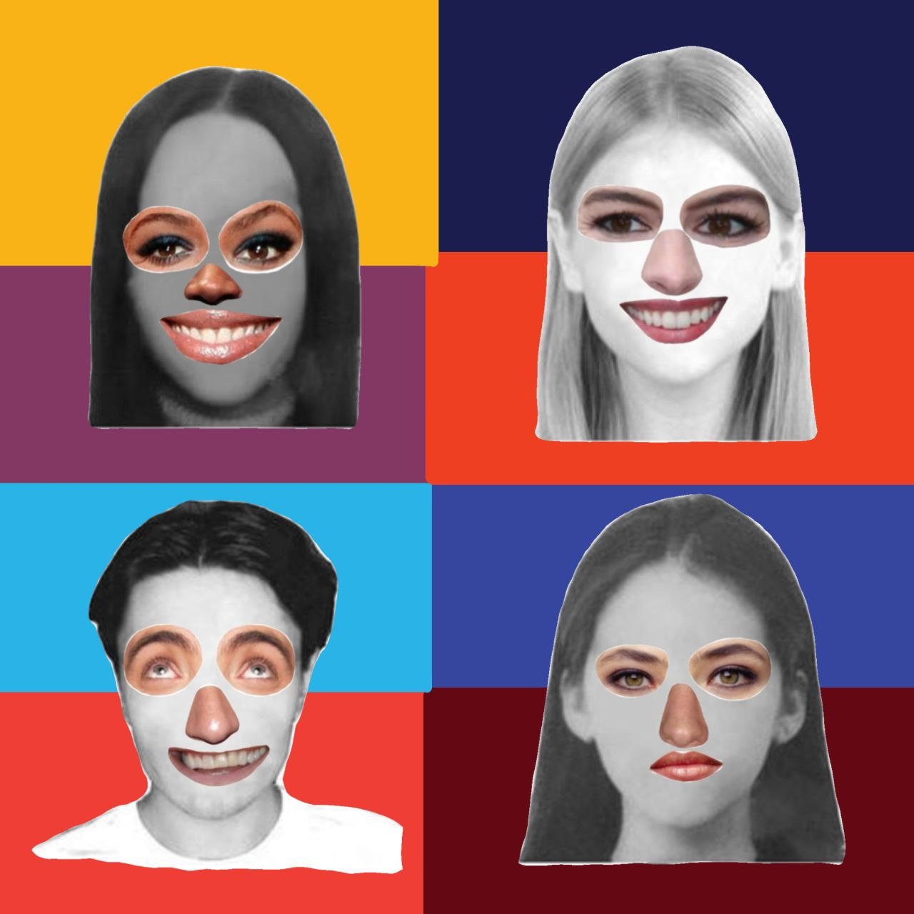

Assuming Faces
Assuming Faces reflects on the idea that identity is something we wear. Each portrait is built from fragments - borrowed eyes, altered expressions, mismatched tones - creating faces that feel both familiar and unsettling. The work questions how much of what we present is authentic and how much is assembled for others.
